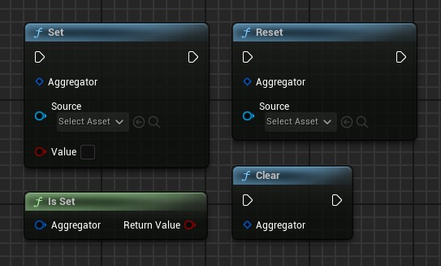
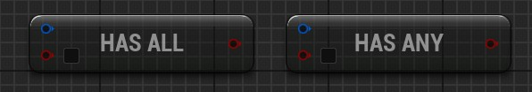
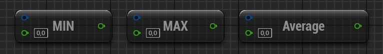
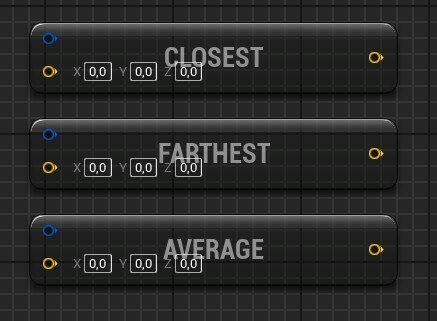
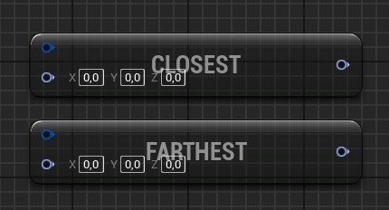

Aggregators
An aggregator is an object taking values from multiple sources and output only one value for your use case.
An example use-case is when you want to lock the inputs of the player.
There may be multiple sources wanting to lock the player inputs, e.g. the dialog system, any menu, a cutscene, or even just interacting with an actor.
Issues may happen if your sources are accessing the player controller boolean directly. For example, if you are interacting with an actor which locks the inputs (while it does something) but during that you pause and resume the game which does also lock/unlock inputs, then the player inputs are unlocked in a situation it should not be unlocked.
An aggregator is useful here: each source will tell "I'm locking/unlocking the player inputs" to the aggregator, and the player controller will ask the aggregator "does any is locking the player inputs?" to know if at least one source has a lock.
Another use-case example is the player maximum speed.
You may have the player speed affected by multiple sources, for example when the player crouches, when he is walking in water, by some buffs/debuffs applied to it, or even being in interior or exterior of buildings.
The aggregators are useful here too. Instead of modifying the max speed directly from the sources, each source will set or reset their max speed in the aggregator, and the player character will get the minimum value from the aggregator to set up its maximum speed.
Each aggregator type have common basic nodes:
Set: A source set its value to the aggregator. The aggregator will store values for each source. If the same source set again a value, it will override its previous value set.Reset: A source removes its value from the aggregator. Does nothing if the source has no value set yet.Is Set: Tells if the aggregator has at least one value set by a source. Returns false if the aggregator has no value set at all.Clear: Removes all values from the aggregator.

Boolean Aggregator
A source can set True or False to the aggregator.
You can then use those nodes from the aggregator to use the values:
Has Allnode: ReturnsTrueif all sources have set the same as the input (for example, when all players are ready to play).Has Anynode: ReturnsTrueif at least one source has set the same as the input (for example, at least one source locks the player inputs).

Scalar Aggregator
The scalar aggregators can have scalar values set from the sources. The Float Aggregator, Integer Aggregator and Int64 Aggregator are all scalar aggregator.
You can use those nodes from the aggregator to use the values:
Get Minnode: Returns the minimum value from all sources. Will return the default value if no value is set.Get Maxnode: Returns the maximum value from all sources. Will return the default value if no value is set.Get Averagenode: Returns the average value (rounded if applicable) from all sources. Will return the default value if no value is set.

Vector Aggregator
The Vector Aggregator treats vector values as points.
You can use those nodes from the aggregator to use the values:
Get Closestnode: Returns the closest source point to the provided input. Will return the provided input if no value set.Get Farthestnode: Returns the farthest source point from the provided input. Will return the provided input if no value set.Get Averagenode: Returns the average point of all source values. Will return the default value set in input if no value is set.

Rotator Aggregator
As the Vector Aggregator, you can use those node from the aggregator to use the values:
Get Closestnode: Returns the closest source rotator to the provided input. Will return the provided input if no value set.Get Farthestnode: Returns the farthest source rotator from the provided input. Will return the provided input if no value set.
